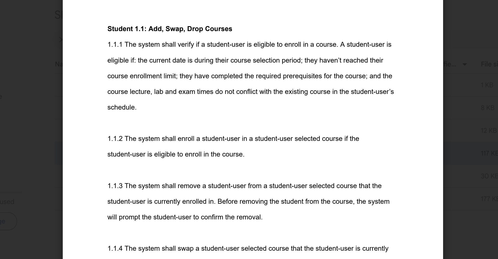
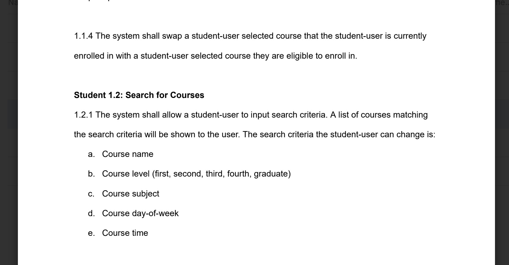
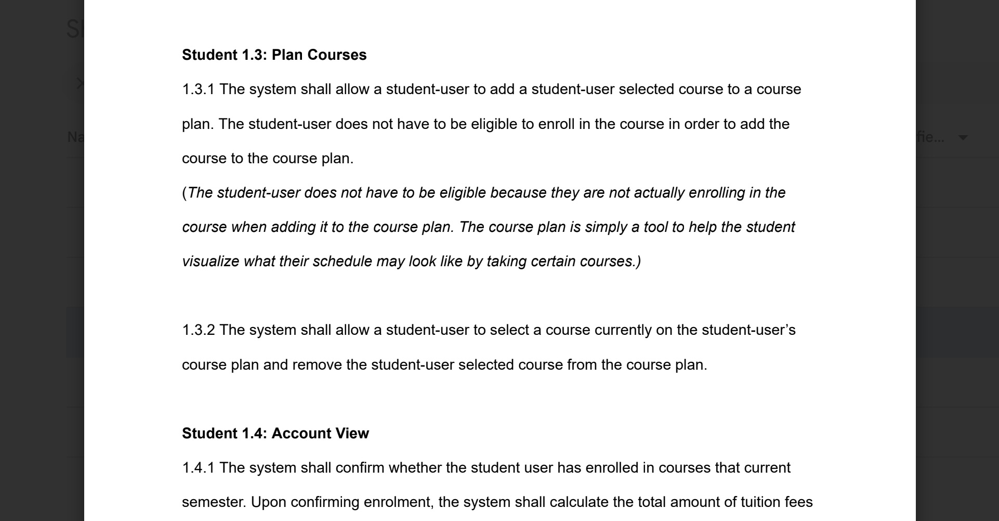

Group leader conducting a requirements analysis including user stories, requirements, class diagrams, etc.



Product Analysis:
Problem Identified: Showcasing my coding skills was incomplete on a one page resume.
KPI: Students reach out to program counsellors less because they have a better understanding of
what courses to take and how to sign up.
Goals:
Identify issues with current system in place.
Design a new product that would address the problems.
Start to implement it into Java code and identify design issues.
Role: Group Leader. Product Analyst.
Technologies Utilized: Word, Java.
User Journey:
The user clicks on the link from my LinkedIn or resume.
The user is taken to a homepage with a quick summary of me.
The user can easily find the projects section and click on one.
The user is taken to the specific project page, where they can visually see the product and read
more information, including a brief synopsis and a more in depth product analysis.
The user can navigate at any time to the home page, about page, or my resume.
The user can click on the about page from the nav bar.
The user is taken to the about page, where they can get more information about me.
Development Journey: January:User stories. Requirements. Specification document. Use Cases.
February: Domain diagramEntity and Use Case Diagrams.
March: Class list and diagram. Sequence diagrams. TextUI. Started implementing into Java.
Learnings:
With additional time and resources I would have liked to understand metrics on the following:
Developed further in Java.
Doing a requirements analysis by myself.
Challenges:
Over the course of the project, some challenges I encountered were:
Class diagram didnt fit exactly, was difficutlto implement because didnt think of everything